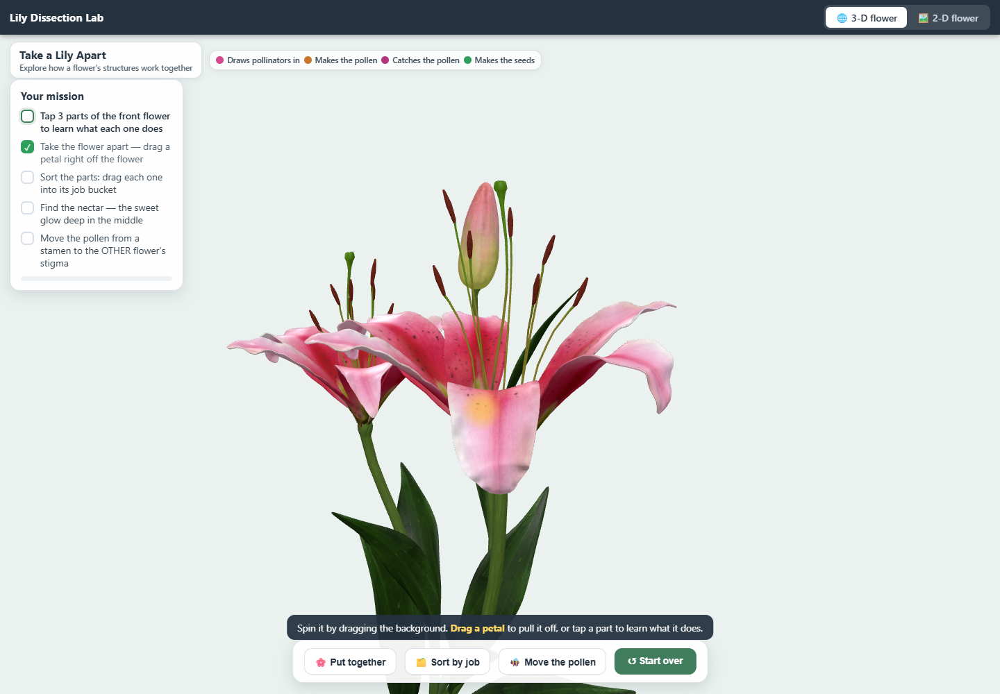
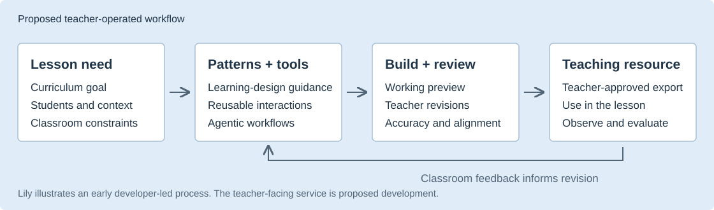
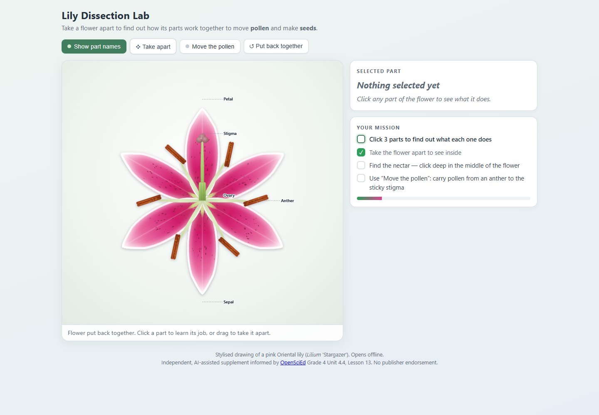

Talk a teaching resource into existence.
A teacher knows what their class needs. The vision is to turn that need into a working STEM resource through conversation, guided by learning patterns and a collection of prebuilt tools.
I built the initial Lily application for a teacher's need in under four hours, using AI workflows and a rudimentary Learnability Patterns knowledge source. The current module includes later refinements. Catalyst support would help make this process usable by teachers themselves.
Illustrative lesson request, based on the Lily module's goal
“My class is investigating how flower structures help plants reproduce. Let them take a flower apart and see how pollen moves.”
The lesson shaped the interaction: explore structures, explain their jobs, and make pollen transfer visible.
Open the Lily moduleWorking 3-D and 2-D resource. Opens offline; no installation.

From a lesson need to a classroom resource
The proposed authoring tool would combine curriculum context, learning-design guidance, and reusable interactions. Teachers would preview the result and ask for changes before using it.

Personalized to the teaching context
The teacher could specify a learning goal, relevant lesson material, student needs, and constraints such as classroom devices or offline access. These choices would shape the resource's content, interaction, and format.
Learning patterns guide the choices
Patterns such as coherence, scaffolding, and explanatory feedback would help the workflow connect what learners do with what the lesson aims to teach. The tool would explain those choices for teacher review.
What exists today?
Lily is a working module produced through a developer-led AI workflow. It has one user; three teachers are giving feedback on the broader work. The teacher-facing conversational authoring service, reusable tool library, and structured evaluation are proposed development.
Lily Dissection: the first module

Lily supports a Grade 4 lesson on flower structures and pollination. It is an independent supplement informed by OpenSciEd Unit 4.4, Lesson 13.
- Separate the structures and explore their functions.
- Find nectar and move pollen to the stigma.
- Use the illustration alongside observation, discussion, and student explanations.
The mission records actions completed. Classroom evaluation would need to examine what students understand and can explain.
Read the illustrated walkthrough- CoherenceThe lesson emphasizes what flower structures do. Names serve as supporting vocabulary.
- ScaffoldingA task sequence and visible pollen target help learners navigate the activity.
- Explanatory feedbackPart descriptions and pollen-transfer feedback connect actions to the modeled process.
What Catalyst would make possible
The initial application is evidence that a teacher's need can shape a working resource through conversation. The next step is to make authoring repeatable across lessons and accessible without a developer.
We would measure teachers' total preparation effort, required assistance, resource accuracy, curriculum fit, and classroom usability. A comparison with general-purpose AI on matched lesson requests would test the value of the combined workflow.
Read the Phase I proposal draftProposed development and pilot
- Build a teacher-facing workflow for requests, previews, and conversational revisions.
- Strengthen the pattern knowledge source, reusable STEM tools, and quality review.
- Invite the three feedback teachers to refine it, then recruit a broader pilot once independent authoring is feasible.
- Share an evaluation rubric, protocol, and aggregate findings.